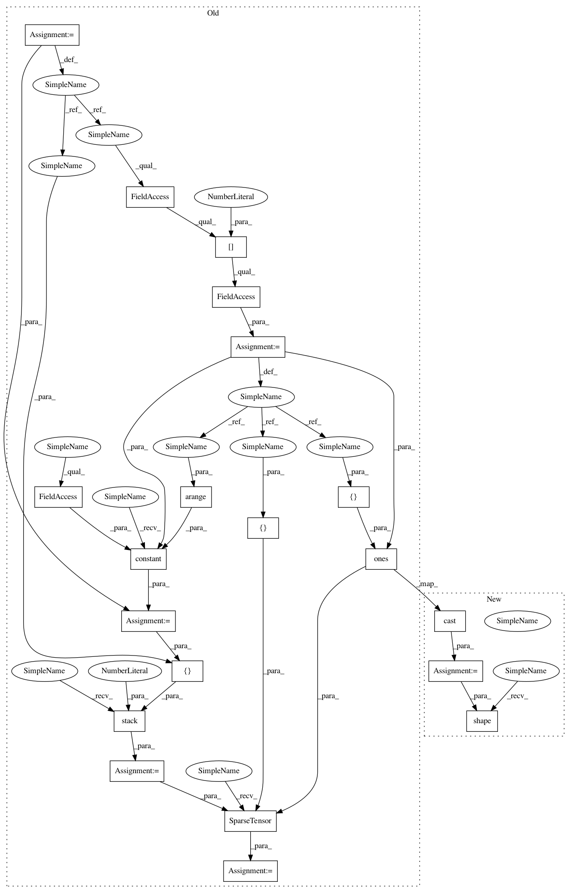

377989c11903f69f042fee717ce6be66bd6eb43a,niftynet/layer/loss_segmentation.py,,sensitivity_specificity_loss,#,182
Before Change
// raise NotImplementedError
tf.logging.warning("Weight map specified but not used.")
ground_truth = tf.to_int64(ground_truth)
n_voxels = ground_truth.shape[0].value
n_classes = prediction.shape[1].value
ids = tf.constant(np.arange(n_voxels), dtype=tf.int64)
ids = tf.stack([ids, ground_truth], axis=1)
one_hot = tf.SparseTensor(indices=ids,
values=tf.ones([n_voxels], dtype=tf.float32),
dense_shape=[n_voxels, n_classes])
one_hot = tf.sparse_tensor_to_dense(one_hot)
// value of unity everywhere except for the previous "hot" locations
one_cold = 1 - one_hot
After Change
// raise NotImplementedError
tf.logging.warning("Weight map specified but not used.")
prediction = tf.cast(prediction, tf.float32)
one_hot = labels_to_one_hot(ground_truth, tf.shape(prediction))
one_hot = tf.sparse_tensor_to_dense(one_hot)
// value of unity everywhere except for the previous "hot" locations
In pattern: SUPERPATTERN
Frequency: 3
Non-data size: 20
Instances
Project Name: NifTK/NiftyNet
Commit Name: 377989c11903f69f042fee717ce6be66bd6eb43a
Time: 2018-04-05
Author: z.eaton-rosen@ucl.ac.uk
File Name: niftynet/layer/loss_segmentation.py
Class Name:
Method Name: sensitivity_specificity_loss
Project Name: NifTK/NiftyNet
Commit Name: 377989c11903f69f042fee717ce6be66bd6eb43a
Time: 2018-04-05
Author: z.eaton-rosen@ucl.ac.uk
File Name: niftynet/layer/loss_segmentation.py
Class Name:
Method Name: sensitivity_specificity_loss
Project Name: NifTK/NiftyNet
Commit Name: 377989c11903f69f042fee717ce6be66bd6eb43a
Time: 2018-04-05
Author: z.eaton-rosen@ucl.ac.uk
File Name: niftynet/layer/loss_segmentation.py
Class Name:
Method Name: dice_nosquare
Project Name: NifTK/NiftyNet
Commit Name: 377989c11903f69f042fee717ce6be66bd6eb43a
Time: 2018-04-05
Author: z.eaton-rosen@ucl.ac.uk
File Name: niftynet/layer/loss_segmentation.py
Class Name:
Method Name: generalised_dice_loss